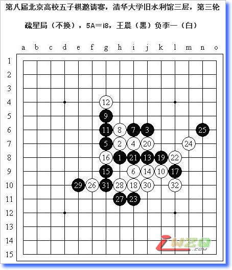
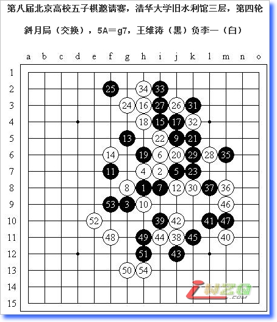

第八届北京高校五子棋邀请赛十局棋评
#1 第八届北京高校五子棋邀请赛十局棋评 作者：有志青年 发表时间：2007-12-5 12:59:40
在这里我首先要感谢张珵从李睿凡老师那里给我提供的我的对阵表！
大家可能已经发现我写的棋评明显变短了，这是一定的趋势……毕竟有一些基础性的内容可能也就不会太重复了。希望我写的棋评中的要点能对大家有所帮助吧！
＝＝＝＝＝＝＝＝＝＝＝＝＝＝＝
一句话总结：第一轮发挥总是不稳定，要改！
黑7活三是莫名奇妙的手段，黑9之后才发现7－9还原为疏星局黑优（胜？）一型（有盘端问题），顿时懊悔不已。白10是老实而有效的手段，黑11把握局势立刻开始控制外围，12弱？14逆止也并无大大碍，16－j10唯一，实战16弱防后黑简单胜。
一句话总结：名月岚月，百骗不厌。
这个局面是我应对水平一般的棋手常用的一个局面，似乎还没有失败过的经历……正解的招法我已经讲过很多次了，在此不再重复。13弱，15败。值得一提的是，两打点f8似乎是一个平衡点，我是因为实在不熟悉又没想到好的应对方法才拔去的。

一句话总结：绝不在同一个地方两次跌倒。
白8之后的手段是希望模仿全国赛上带小孩胜我的下法。黑9？这个点的变化在团体赛对过胡瑜之后我早已熟稔，因此并没有太大威胁，倒是对手的黑15出了问题，18先抢要点！26转机！预想29－31，30－f9。不想对手一步诡异的弱防直接葬送了这盘棋。

一句话总结：优势局面，更要好好把握。
白18后我坚信黑棋局部无胜，当然总体而言黑棋并无不好之处，敢于这么下棋的人恐怕很少了。33诡异的交换，34便宜很大。35后为平和防守成功心情，36是保守的方法。37弱，此时面对巨大的先手优势，我并没有把握得很好。38、40后的巨大优势其实只是海市蜃楼，42以下交换力求先手不失，至48开始利用全盘的优势，49终于弈出弱防。
一句话总结：五子棋，一子棋。
黑7一出，我就知道这盘有希望了，这个强攻的定式我还是有所了解的，白棋只要认真防守就能迎来光明。11及时变招，12防，13攻守兼备……正当我思考如何防守的时候，一个念头划过我的脑海……何不进攻？！14一落，对手的脸上明显有些难看了，15诡异的防守，17再弱防，18常见的做杀形状，黑棋无解了。
一句话总结：要对棋型敏感，找到对手的薄弱点，以强胜弱才是最简单的。
黑5的变化其实是高三暑假期间自己研究过的，虽然印象不太深了，但基本的思路还记得。11－i9强，实战11白棋可追胜，14的手段值得好好体会。
一句话总结：变招的前提是了解。
12的选择黑棋又有了更强的应对，但这个13之后的变化还是很丰富的。15－18强，实战16、26妙手！27－29后依然黑苦。
一句话总结：棋乱心不乱。
13是赛前特意研究过的手段，当时作为执黑的一方我总觉得在右下方难以争先，但现在看来研究棋或定式储备的确不是我的强项。21的手段令我很痛苦，及至27手，白棋似乎很难防守了。没想到28以下至41缓手，再至44，竟然防守成功了。47一手顺序错误！47－48后局面将向和棋发展。实战50、52敏锐，白好形，黑无解了。
一句话总结：定式定也，实战战也，战无所定。
张珵没有交换，既在情理之中，又在意料之外。黑7好手！黑9活三至11是我们共同探讨过的手段。12是可以预见的强手，如果我继续走最强的13－22的话恐怕也会落入研究吧！可惜我总是知道太少的定式，13－52是一般的应对，实战13是临场的发挥，局面应属平衡，但张珵竟然走出了白16并开始计算杀法——最终证明这不但是徒劳的，而且浪费了宝贵的时间（每人30分钟对我们来说真的太短了）。21手段微妙，25完全地控制。26无奈，先控制最强点。以下我利用先手在右边腾挪，张珵终于败在了紧迫的时间之下，42随手后黑胜。
一句话总结：注意了解一下对手的对局还是必要的。
与第七轮异曲同工的一盘，魔术般的十连胜最终如此轻松地降临。